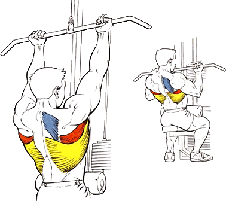

В основе этого упражнения для спины в тренажерном зале – принцип подтягиваний. Оно нагружает широчайшие мышцы, бицепсы и передние дельты.
Исходное положение:
Сесть на тренажер, взяться за его ручки широким хватом, немного согнув руки. Прогнуть поясницу и соединить лопатки.
Техника выполнения:
Подтянуть рукоять к верху груди, сводя лопатки еще больше.
Плавно вернуть рукоять обратно.
Рекомендации:
Для снятия нагрузки с бицепса можно использовать открытый хват (большой палец лежит сверху грифа).
Локти не сводить и не отводить назад, держать их в одной вертикальной плоскости.